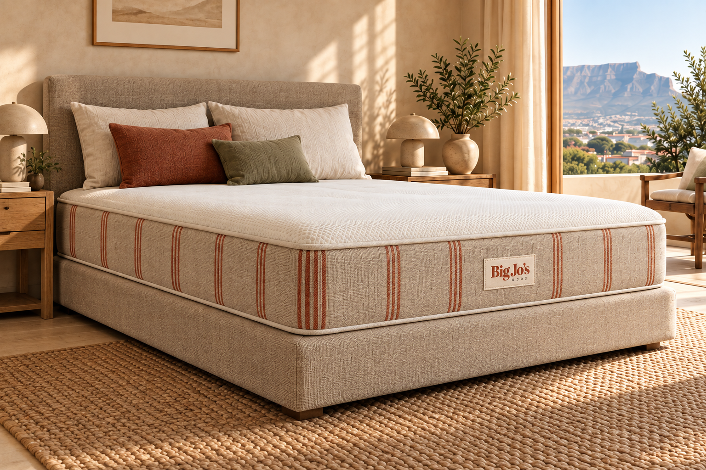
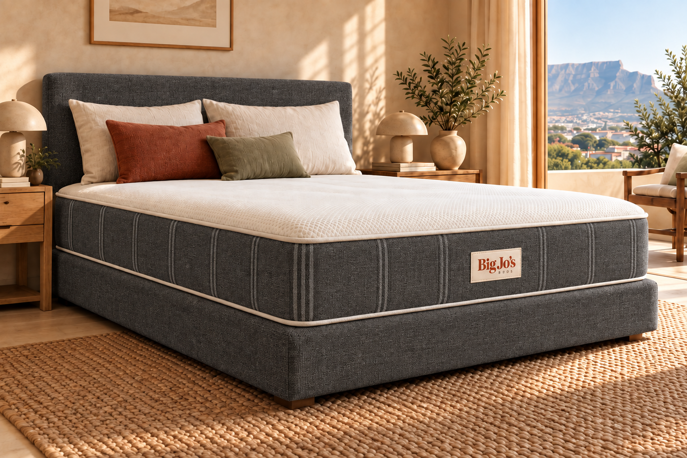

01 / THE FINISH
Flax
Natural-coloured woven fabric with clay stripes. The warmer, lighter option.
Explore FlaxA warm, confident digital identity for Big Jo’s Beds. Built around room to rest.
Offline reference · Tokens, assets and components included

Bone gives the page room to breathe. Clay carries the brand. Ink keeps every word grounded.
#F4F0E7
#A3442F
#292C27
#CDBA9E
#454541
#FFFCF6
Use Ink, Muted or Clay for text on Bone. Flax and Line are surface colours, not small-text colours.
Use the supplied SVGs. Keep clear space and preserve the approved descriptor placement.
DM Serif Display brings warmth to the headline. DM Sans makes every practical detail easy to read.
DISPLAY / DM SERIF DISPLAY / 400
Built for big.
BODY / DM SANS / 400 · 500 · 600
Finally, a bed that fits. A generous footprint, a firm feel, and two considered finishes.
160 × 210 cm Made to order in Cape Town
Tab through the page to inspect focus states. Use links for navigation and buttons for actions.

Natural-coloured woven fabric with clay stripes. The warmer, lighter option.
Explore Flax ↗Dark grey woven fabric with subtle tonal stripes. A darker finish with the same cream top.
Explore Charcoal ↗Concept imagery. Headboard, pillows and accessories shown for styling; inclusions to be confirmed.
A firm 160 × 210 cm mattress with a matching heavy-duty base. Made to order in Cape Town for big and tall people.
Selected finish: Flax
Copy this folder into your website project as brand/. Ask Claude Code to read brand/CLAUDE.md and follow START-HERE.md.